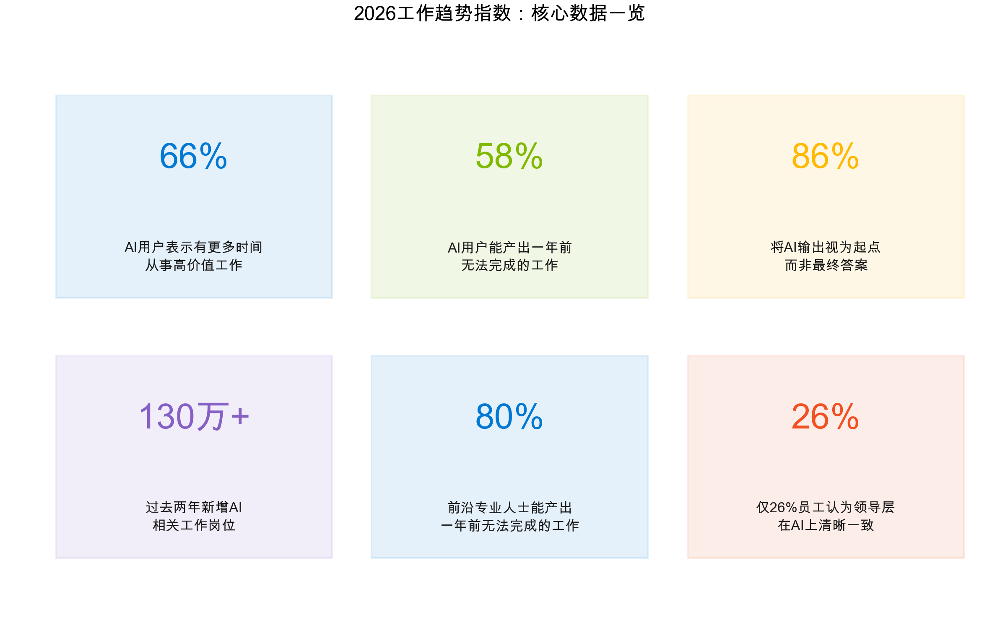
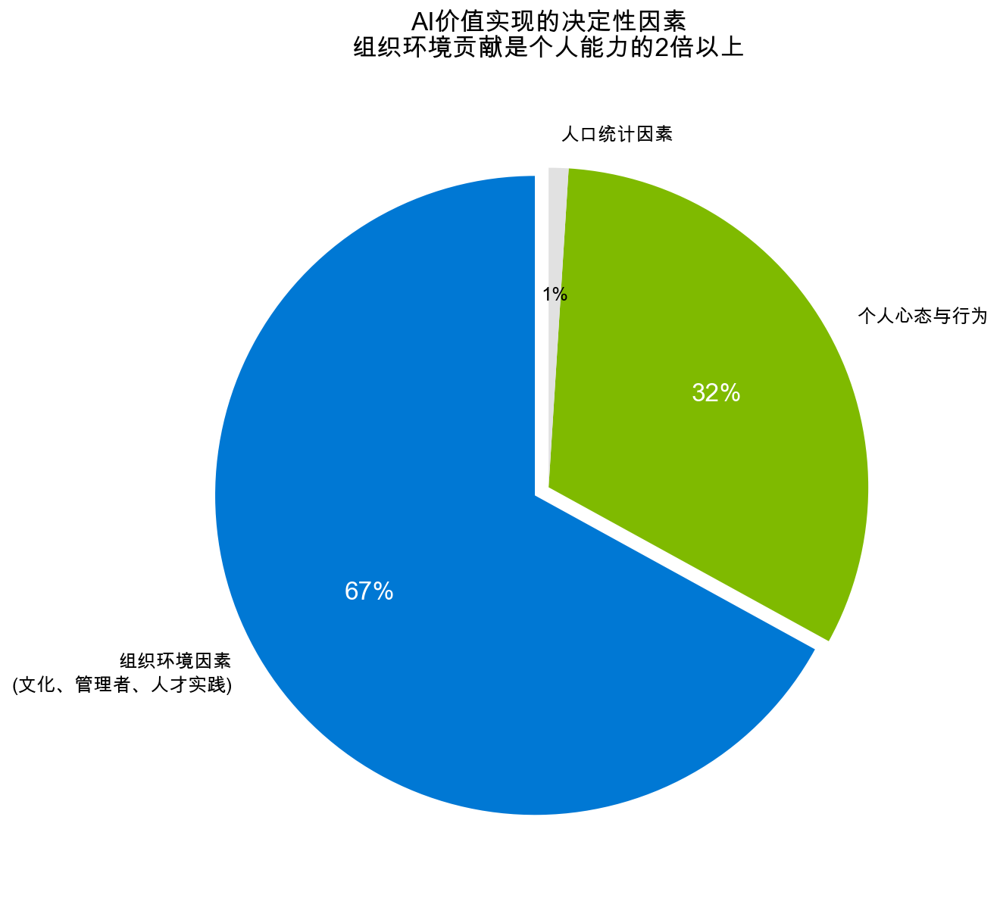
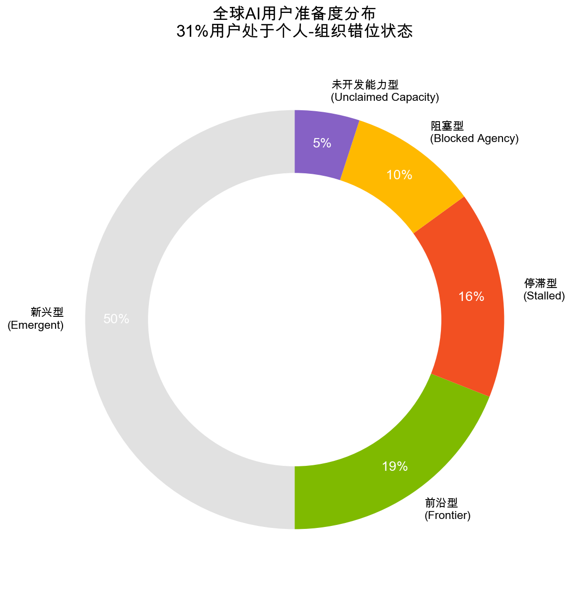
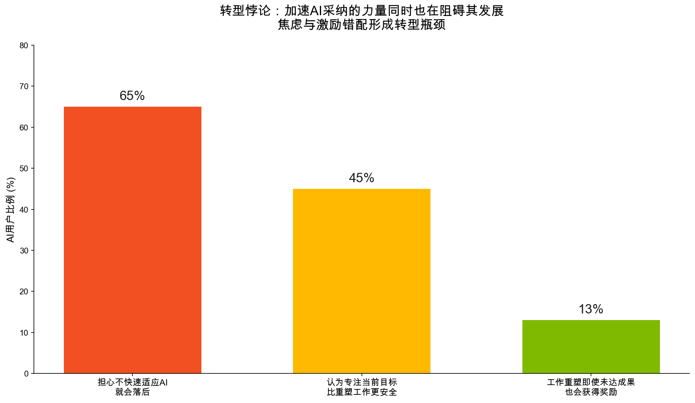
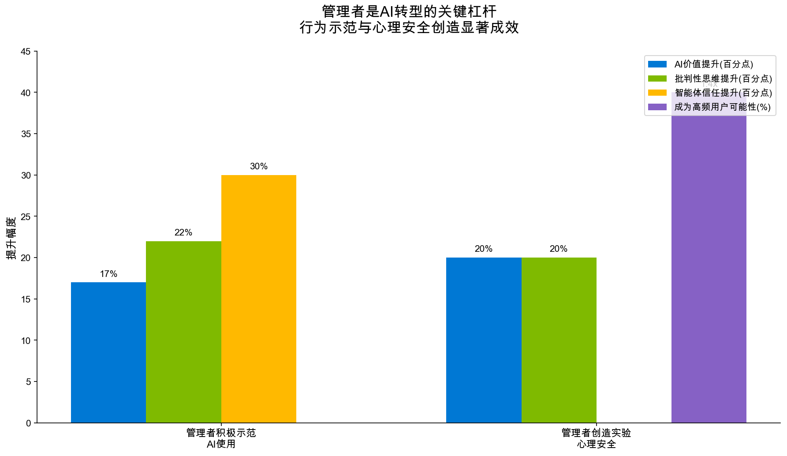
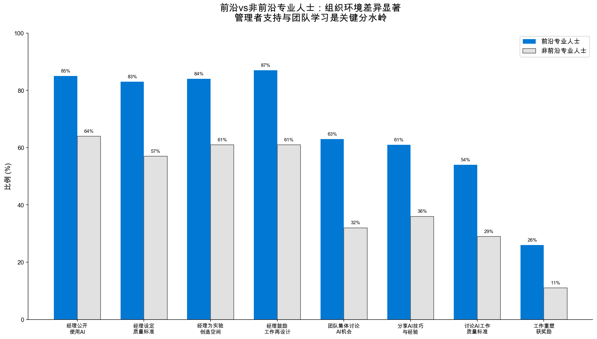
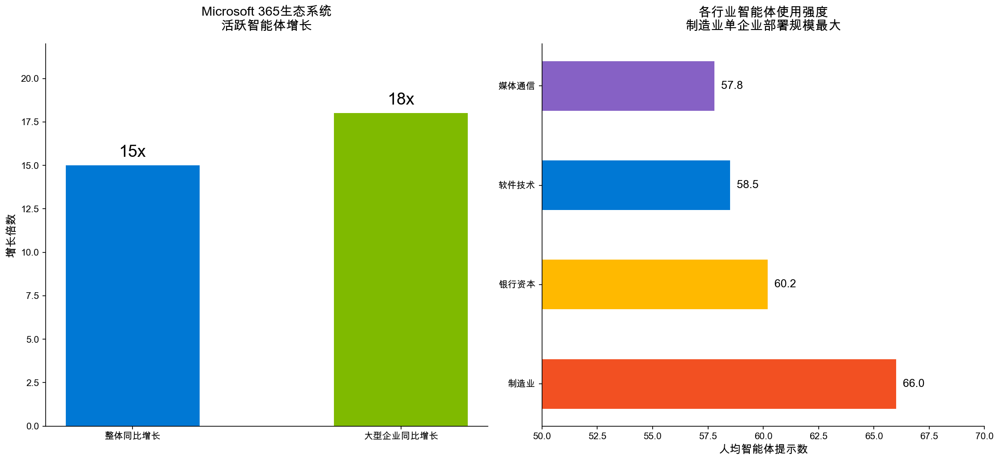
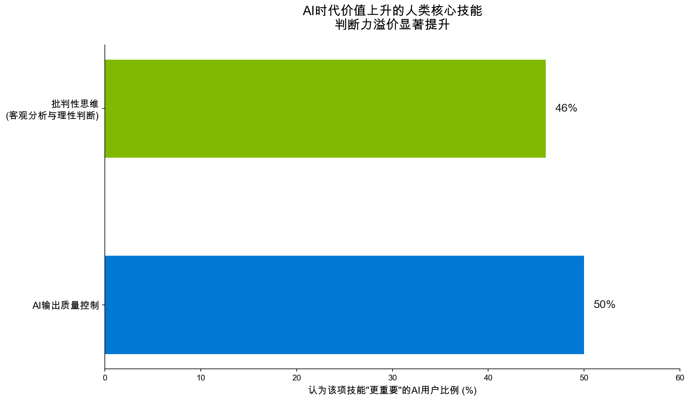
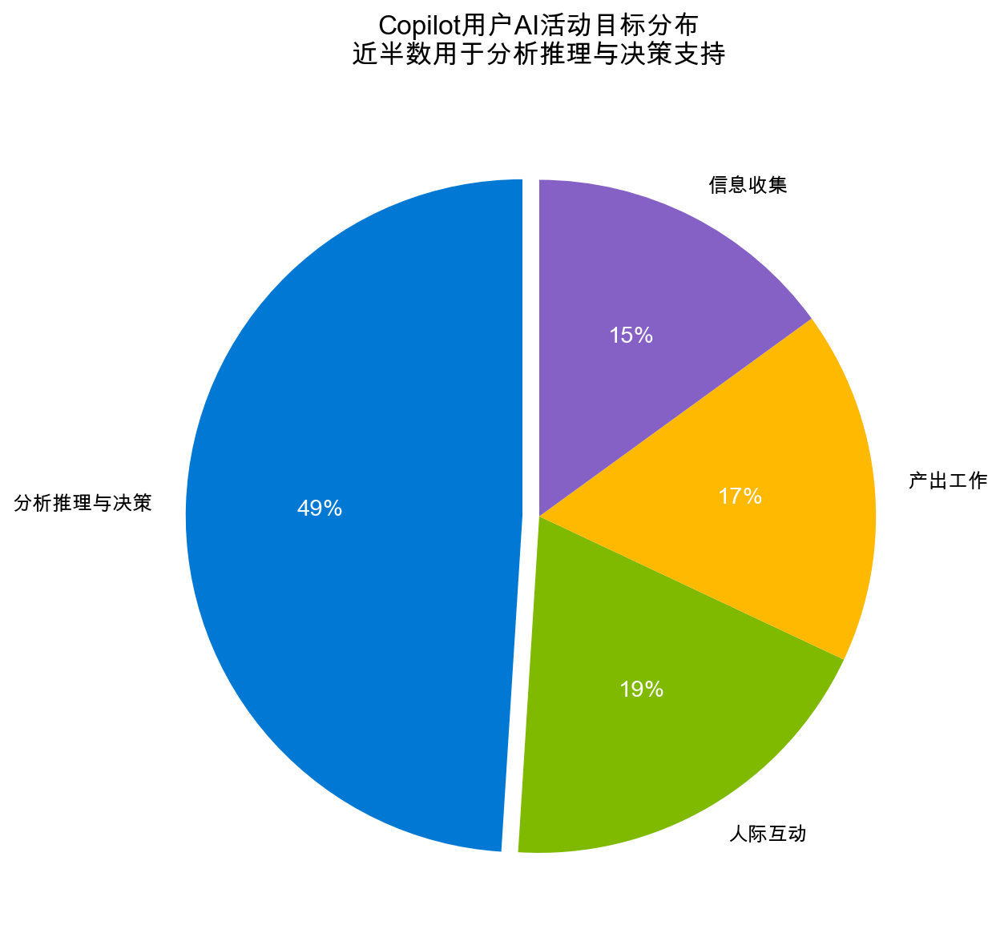

智能体、人类能动性与每个组织的机遇
深度分析与可视化洞察
微软2026年工作趋势指数年度报告基于对全球27个市场20,000名AI使用知识工作者的调查，结合Microsoft 365数万亿匿名化生产力信号分析，揭示了一个根本性转变：随着AI智能体承担更多执行性工作，人类能动性不是被削弱，而是得到前所未有的扩展。
报告最重要的发现颠覆了传统认知：AI价值实现的67%取决于组织环境（文化、管理者支持、人才实践），个人技能和心态仅占32%。这意味着AI转型的瓶颈不在技术采纳，而在运营模式重构。
报告揭示了AI时代工作方式转型的七个核心观点，共同描绘了未来工作的新图景。

图1：2026工作趋势指数核心数据指标
这份报告最具颠覆性的发现之一是：AI能否真正创造价值，主要不取决于员工个人的技能水平或使用意愿，而取决于组织是否创造了合适的环境。
通过三种机器学习模型（弹性网络、随机森林、XGBoost）对29个因素的交叉验证分析显示：
组织AI文化是单一最强预测因子，其信号强度约为最强个人因素（AI心态）的2.5倍。前三名最重要的因素全部是组织层面的。

许多企业将AI转型重心放在员工技能培训上，但数据表明这远远不够。真正起作用的是领导者为人才蓬勃发展创造的条件——不是"人们是否具备合适技能"，而是"组织是否构建了能够释放这些技能的体系"。
基于个人AI能力和组织AI条件两个维度，报告将全球AI用户划分为五个群体。这一分析揭示了一个严峻现实：31%的用户处于个人与组织能力错位状态。

图2：全球AI用户准备度分布（n=16,971）
个人AI能力和组织AI条件双高，相互强化。他们代表了人机协作的成熟模式。
个人AI能力高但组织条件低——"想做但做不了"，组织的系统、激励、文化阻碍了他们发挥AI价值。
组织AI条件高但个人能力低——"有条件但不会用"，是培训赋能的重点对象。
个人能力和组织条件双低，需要系统性变革才能启动AI转型。
50%的用户处于"新兴型"区域——个人能力和组织条件都在形成过程中。这意味着大多数组织正处于AI转型的关键窗口期，未来12-18个月的决策将决定它们最终进入哪个象限。

报告识别出一个深刻的矛盾——"转型悖论"：加速AI采纳的力量同时也在阻碍其发展。
一方面，65%的AI用户担心如果不快速适应AI就会落后——这种焦虑成为采纳的强大驱动力。
但另一方面：
结果是：员工感受到必须使用AI的压力，但旧的绩效指标、激励机制和工作规范仍然在奖励"按旧方式做事"。
领导者和员工之间存在显著的感知差异：
基于Microsoft People Science对1,800名员工（包括819名领导者、520名管理者、461名个人贡献者）的专项研究，管理者行为对员工AI成效的影响被量化证实。

图3：管理者行为对员工AI成效的提升幅度
管理者不需要成为AI技术专家，但必须成为"AI使用的首席示范官"。Dr. Laura Hamill（AI@Work研究总监）指出："领导者需要亲自使用AI，亲身体验构建，否则无法真正理解。" 管理者的可见行动比任何培训项目都更有效。
报告识别出一群"前沿专业人士"（Frontier Professionals），约占AI用户的16%（3,233人）。他们同时具备三类行为：(1)高级使用AI智能体完成复杂/多步骤工作；(2)常规性重新设计工作流以利用AI优势；(3)参与可规模化的结构化、可重复AI实践。

图4：前沿专业人士 vs 非前沿专业人士的组织环境差异
最值得注意的是，前沿专业人士不是"更多"使用AI，而是"更明智"地使用AI：
前沿专业人士所在团队的知识共享频率是非前沿团队的近2倍：
Microsoft 365生态系统的数据显示，AI智能体（Agents）正在迎来爆发式增长。智能体与传统的AI助手（Copilot）不同——它们能够自主执行多步骤任务、跨系统工作，并持续学习改进。

图5：活跃智能体增长与行业采纳情况（2025.3-2026.3遥测数据）
各行业个人使用智能体的水平相似，真正的差异在于智能体嵌入的位置和组织工作流整合深度。制造业虽然采纳智能体的企业比例较小，但单企业部署规模最大，人均提示数达66.0——这表明制造业正在将智能体深度集成到核心生产流程中。
前沿专业人士的核心能力是知道每种任务需要哪种人机协作模式：
人类设定方向，智能体执行。适用于标准化、可重复的任务，如定期报告生成、笔记结构化。
人和智能体共同完成，高频率来回交互。适用于提案完善、分析构建、需要判断的沟通材料起草。
快速提问，快速交流。适用于事实查找、句子重写、格式转换等即时需求。
测试AI能力边界，低人类强度+高智能体强度。适用于新工作流测试、提示策略实验、能力边界探测。
随着智能体规模化部署：

随着AI扩展人类能力，人类判断力的价值不是下降，而是显著上升。
AI用户认为AI时代最重要的两项人类技能是：
86%的AI用户表示他们将AI输出视为起点而非最终答案，坚持"对思考负责"。这不是对AI的不信任，而是对专业责任的深刻理解。

图6：Copilot用户AI活动目标分布（基于10万+对话分析）
对超过10万次Microsoft 365 Copilot对话的分析显示，49%的AI使用目标是分析推理与决策支持，而非简单的内容生成。这表明用户已经在将AI用于高阶认知任务——而人类的判断和审查在这些任务中更加关键。
AI时代，工作的核心问题从"什么任务定义我的工作"转变为"我现在能推动什么成果"。人类独有价值体现在：
定义期望成果和质量标准
设计人机协作的工作完成方式
应用判断力和品味做出决策
塑造产生更好成果的系统环境
报告提出了一个重要观点：今天真正的竞争优势不在于谁先采纳AI，而在于谁能最快从AI使用中学习，并将学习转化为组织能力。
领先企业专注于"AI吸收"（absorption）而非仅仅"AI采纳"（adoption）。它们构建自动化学习循环：
通过这个循环，企业构建其"自有智能"（Owned Intelligence）——随时间复利、企业独有、难以复制的制度性专有知识。Dr. Karim Lakhani（哈佛商学院教授）指出："你需要一个自动化学习循环，因为AI系统在持续变化，你构建的系统也需要持续变化。"
基于报告 findings，我们为不同角色提出以下行动建议：